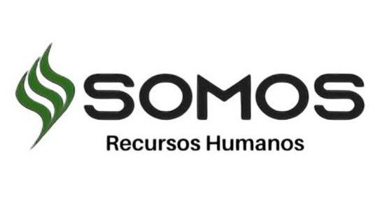

Empresas
Impacto real y verificable para tu organización
En La Constancia cuidamos un arboretum vivo con más de 300 especies de árboles y arbustos, en Mar del Plata. A diferencia de la mayoría de los proyectos de naturaleza, acá cada árbol es trazable —tiene su ficha, su ubicación y su código QR—, y la información es abierta. Eso convierte el aporte de tu empresa en un impacto medible y verificable, sin greenwashing.
Trabajamos con empresas de varias formas: sumarse a la Red de Empresas es una de ellas, pero también podés contratar una experiencia puntual o patrocinar un programa. Elegí la que mejor se adapte a tu organización.
Formas de trabajar con nosotros
🤝 Experiencias y eventos corporativos
Jornadas de team-building, bienestar y baños de bosque, retiros, observación de aves y eventos en un entorno único. No hace falta ser miembro de la Red.
🌱 Alianzas de impacto (ESG)
Patrociná la conservación del arboretum y recibí un reporte anual de impacto —biodiversidad y carbono estimado— trazable y con tu marca. Ideal para reportes de sustentabilidad.
🎓 Educación patrocinada (RSE)
Financiá visitas de escuelas y material educativo. Una historia de responsabilidad social concreta y con alcance local.
🗺️ La plataforma
¿Tenés un espacio verde o colección? Llevalo a un atlas digital como este.
🌳 Red de Empresas
Sumate a una red de empresas con propósito, con beneficios continuos, networking e impacto compartido.
Por qué La Constancia
Transparencia total
Datos abiertos, una ficha y un QR por árbol.
Método científico
Índices de biodiversidad y estimación de carbono con metodología reconocida.
Plataforma funcionando
Este mismo sitio es la prueba viva de lo que hacemos.
Nuestro impacto
Red de Empresas del Arboretum
La Red de Empresas del Arboretum invita a organizaciones a formar parte de un proyecto que integra naturaleza, bienestar, educación y comunidad. Sumarse es construir un legado que trasciende, con impacto trazable y verificable.
- Formar parte del primer jardín botánico de Mar del Plata, un espacio donde naturaleza, comunidad y empresas generan impacto real.
- Asociar tu organización a valores de sostenibilidad, innovación y futuro.
- Integrarte a una red empresarial con propósito.
- Presencia en redes sociales y materiales institucionales.
- Networking empresarial.
- Encuentros sobre sostenibilidad y triple impacto.
- Actividades de bienestar en la naturaleza.
- Jornadas de voluntariado corporativo.
- Sponsoreo de proyectos del arboretum.
- Aportes en especie o colaboración institucional.
Proyectos que podés apoyar
🪧 Señalética educativa
🥾 Senderos interpretativos
🪑 Bancos y espacios de descanso
🌳 Identificación de especies
🚻 Baños ecológicos e inclusivos
🌱 Reforestación y nuevas colecciones
Empresas fundadoras de la Red

Las empresas fundadoras acompañan a la Red desde sus inicios. ¿Querés sumar la tuya?
Coordinación
Magdalena Zurita
Coordinación institucional, programas educativos y conservación.
Juan Ignacio Zurita
Desarrollo estratégico, vinculación con empresas y comunicación institucional.
Hacia dónde vamos
Estamos construyendo capacidades de datos de alto valor para partners de investigación y desarrollo: datos de resiliencia climática, una red de fenología con sensores, un gemelo digital del arboretum y conjuntos de datos listos para inteligencia artificial. Si tu empresa mira al futuro de la naturaleza y los datos, hablemos.
Expresá tu interés
Contanos qué busca tu organización y armamos una propuesta a medida.
Quiero trabajar con el arboretum
Contacto y ubicación
Correo: laconstanciaargentina@gmail.com Ubicación: Arboretum de Estancia La Constancia, Camino 515, Mar del Plata, Argentina